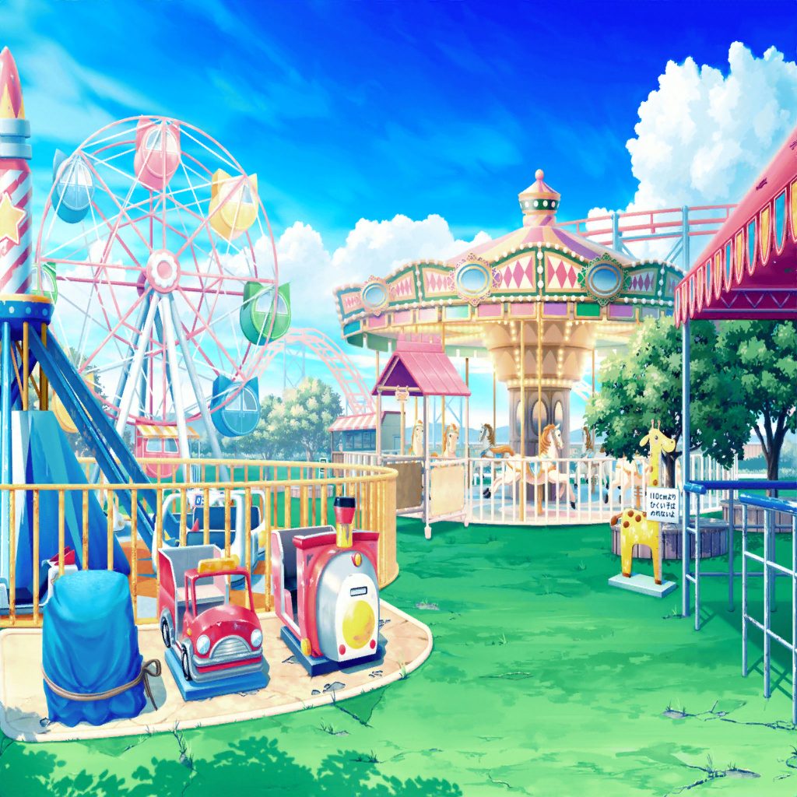

数日後
花咲川スマイル遊園地
こころ
みんな、集まったわね！
それじゃ作戦会議を始めるわよ！
こころ
どんなことをしたら、たくさんお客さんが集まってくれるかしら？
はぐみ
音楽でお客さんを集めるってことはやっぱりライブだよね！
はぐみ、遊園地のステージでライブをしたらいいと思う！
はぐみ
すっごく楽しいライブにすれば、
お客さんたくさん来てくれるよねっ！
こころ
素敵なアイディアね！
すっごく楽しいライブなら絶対に来てくれるわ！
薫
私としてはそうだね……
儚さのあまり胸を締め付けられ、歓喜の涙が溢れ出す……
そんなステージをみんなに届けたいな
こころ
よくわからないけど、それもきっといいアイディアだと思うわ！
美咲
何一つ具体的な案が出てこない……
花音
いつも通りだけど、ちゃんとまとまるのかな……
美咲
はあ、盛り上がってるところ悪いけど、ちょっといい？
こころ
どうしたの？
美咲
あとでガッカリされても嫌だから言うけど……
お客さんが集まっても遊園地は続けられないと思うよ
はぐみ
えっ？ どうして？
美咲
だって、ライブをした日だけお客さんが来ても意味ないでしょ。
遊園地は安定してお客さんが来ないと続けられないんだよ
はぐみ・薫
…………！
美咲
あんた達には悪いけど、これが現実。
遊園地の立て直しなんて、あたし達にできることじゃないって
美咲
あの社長さんもここを続ける気なさそうだし、
余計なことしないほうがいいんじゃない？
こころ
そうかしら？
社長さんはまだ遊園地を続けたいと思ってるわよ！
花音
どうしてわかるの……？
こころ
だって、遊園地で楽しんでるあたし達を
見て嬉しそうにしてたじゃない！
こころ
諦めてるって言ってたけど、
遊園地を続けてきたのはここが好きだからだと思うの
はぐみ
はぐみもそう思う。
うまくいかなくて自信をなくしちゃってるだけだよ
こころ
１日だけでもここをお客さんでいっぱいにできたら、
それはとっても意味のあることじゃないかしら？
こころ
どんな場所でも楽しい場所にできるって伝えられれば、
社長さんも忘れてた気持ちを思い出してくれるわ！
薫
消えてしまった情熱の炎を再び灯す……
それはとても儚い行為だね
はぐみ
うん！ まだ遊園地を続けられるってこと、
社長さんに見せたい！
美咲
それを証明するためにライブをするってことか……
花音
そういうことなら、
遊園地でライブをする意味はあるのかもしれないね
こころ
それじゃ作戦会議の続きに戻るわよ！
楽しいライブのアイディアをた〜〜くさん出しましょっ！
はぐみ
えーと、すっごく楽しいライブにして、うーん、あとは〜……
美咲
……ていうか、まず宣伝を考えたほうがいいんじゃない？
お客さんが来ないことには意味ないと思うんだけど……
こころ・薫・はぐみ
…………！
はぐみ
そうだよ！ まずお客さんをここに呼ばないとだよ！
薫
私としたことがそのことに気がつかないなんて……
まったく盲点だったよ
こころ
さすが美咲だわ！ することが一つ決まったわね！
美咲
いや、そこは気づこうよ……
はぐみ
……あっ、はぐみも思いついた！
はぐみ
この遊園地、もっとピカピカにできないかな？
はぐみ
ペンキが取れてるところもあるし、
キレイになったらお客さん喜ぶと思う！
花音
それって、私達でペンキを塗り直すってこと……？
はぐみ
うん！ ペンキを塗って飾り付けをして、
ピカピカの遊園地にするの！
はぐみ
ほら、あのおっきな壁とか、ボロボロのままじゃ可哀想だよ！
薫
ああ、なんの壁画が描かれていたのか
わからなくなってしまった壁のことだね
薫
あの壁もペンキを塗り直したほうが良さそうだが、
ただ一色で塗ってしまうのは味気ないね
はぐみ
それなら、みんなで絵を描こうよ！
はぐみ
楽しい絵を描いたら、
スマイル遊園地に笑顔がいっぱい増えると思うんだっ！
こころ
すごいわ！ 笑顔になれる壁画なんて最高じゃない！
美咲
アイディアを出すのはいいけど、ちゃんと許可を取ってからだよ？
花音
ふふ、実現できたら素敵だね
はぐみ
……あれ？ あの壁のそばに何か置いてあるよ？
シートが被されてるけど、乗り物なのかな？
こころ
なんだかかわいい乗り物ね！ たくさんあるみたいよ！
はぐみ
これ、パレードの時に使う乗り物だよ！
お祭りの山車みたいなやつ！
花音
確か、パレードフロートっていうんだよね、こういう乗り物
薫
パレードが廃止されてから、
ずっとここに置かれたままなのかもしれないね
こころ
このフロートもピカピカにできないかしら？
花音
修理するってこと？
こころ
いつも通りのライブも楽しいけど、
パレードでライブをしたらもっともーっと楽しいと思うの！
薫
！ なんて儚いことを思いつくんだ、こころ……！
はぐみ
すごいや、こころん！
みんな、花マル笑顔になれちゃうライブになるよ！
はぐみ
あ、そうだ！
せっかくだからパレードのために新しい曲も作ろうよ！
こころ
いいわね！ いいわね！
うーーんと盛り上がる曲、作りましょう！
薫
そうなるとパレードの演出にもこだわりたいところだね。
フロートももっと華やかに飾り付けたほうがいいかもしれない
花音
な、なんだかやることがどんどん増えてくね……
美咲
ですね……
そして、このアイディアをまとめるの、あたしなんだろうな……